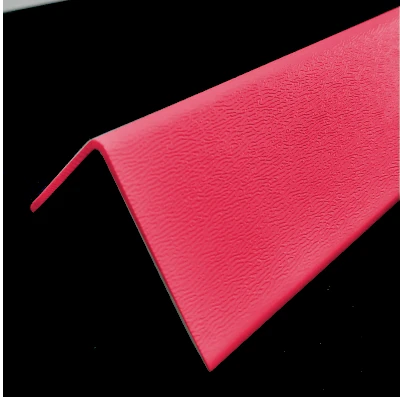

Ürün Kataloğu
Tüm ürünlerimizin detaylı teknik özellikleri ve ölçüleri
Tam Kataloğu İndirin
Tüm ürün gamımızı içeren detaylı kataloğumuzu PDF formatında indirebilirsiniz. Daha fazla bilgi için 25x25 mm plastik köşebent sayfamızı ziyaret edin.
- 45 farklı ürün modeli
- Teknik çizimler ve ölçüler
- Montaj talimatları
- Fiyat listesi
Teknik Özellikler Tablosu
| Ürün Kodu | Ürün Adı | Boyutlar (mm) | Malzeme | Renk | Kutu Adedi | Fiyat | Detay |
|---|---|---|---|---|---|---|---|
| PK-L-001 | L Tipi Köşebent | 30x30x30 | Polikarbonat | Beyaz | 100 | ₺15,90 | |
| PK-L-002 | L Tipi Köşebent | 40x40x40 | Polikarbonat | Siyah | 75 | ₺22,50 | |
| PK-L-003 | Mini L Tipi | 15x15x15 | ABS | Gri | 200 | ₺8,90 | |
| PK-T-001 | T Tipi Köşebent | 25x25x25 | Polipropilen | Beyaz | 80 | ₺18,50 | |
| PK-T-002 | T Tipi Köşebent | 35x35x35 | Polipropilen | Siyah | 60 | ₺24,75 | |
| PK-F-001 | Düz Köşebent | 50x20x5 | PVC | Beyaz | 150 | ₺12,75 | |
| PK-F-002 | Düz Köşebent | 75x25x8 | PVC | Gri | 100 | ₺18,25 | |
| PK-A-001 | Ayarlanabilir Köşebent | 30x30x30 | Naylon | Siyah | 50 | ₺35,00 | |
| PK-A-002 | Ayarlanabilir Köşebent | 45x45x45 | Naylon | Gri | 40 | ₺42,50 |
Teknik Çizimler

L Tipi Köşebent - Teknik Çizim
Standart L tipi köşebent teknik özellikleri

T Tipi Köşebent - Teknik Çizim
T tipi köşebent montaj detayları

Ayarlanabilir Köşebent - Teknik Çizim
Ayarlanabilir köşebent kullanım alanları